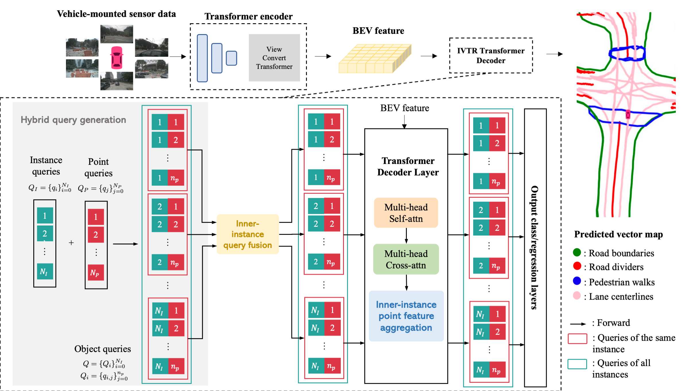
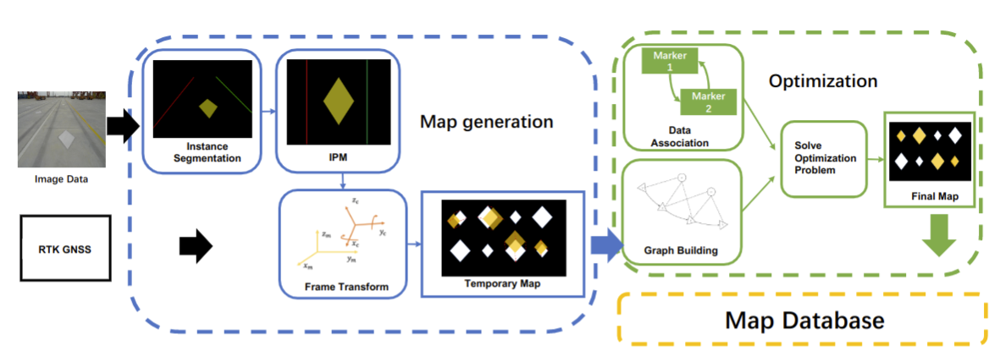

@article{xu2023drivegpt4,abbr={Preprint},selected={true},title={DriveGPT4: Interpretable End-to-end Autonomous Driving via Large Language Model},author={Xu, Zhenhua and Zhang, Yujia and Xie, Enze and Zhao, Zhen and Guo, Yong and Wong, K.Y. Kenneth and Li, Zhenguo and Zhao, Hengshuang},year={2023},img={../assets/img/drivegpt4.png},pdf={DriveGPT4.pdf},website={/projects/DriveGPT4},arxiv={2310.01412}}
Preprint
DriveGPT4: Interpretable End-to-end Autonomous Driving via Large Language Model
Xu Zhenhua,
Zhang Yujia,
Xie Enze,
Zhao Zhen,
Guo Yong,
Wong K.Y. Kenneth,
Li Zhenguo,
and Zhao Hengshuang
@article{xu2023insightmapper,abbr={Preprint},selected={true},title={InsightMapper: A closer look at inner-instance information for vectorized High-Definition Mapping},author={Xu, Zhenhua and Wong, K.Y. Kenneth and Zhao, Hengshuang},year={2023},img={../assets/img/insightmapper.png},arxiv={2308.08543},website={https://tonyxuqaq.github.io/InsightMapper/},code={https://github.com/TonyXuQAQ/InsightMapper},supp={https://tonyxuqaq.github.io/InsightMapper/pdf/2024_InsightMapper_Appendix.pdf}}

Preprint
InsightMapper: A closer look at inner-instance information for vectorized High-Definition Mapping
Xu Zhenhua,
Wong K.Y. Kenneth,
and Zhao Hengshuang
@article{xu2022rngdet++,abbr={RAL},selected={true},title={RNGDet++: Road Network Graph Detection by Transformer with Instance Segmentation and Multi-scale Features Enhancement},author={Xu, Zhenhua and Liu, Yuxuan and Sun, Yuxiang and Liu, Ming and Wang, Lujia},journal={IEEE Robotics and Automation Letters},year={2023},img={../assets/img/RNGDet++.png},website={/projects/RNGDetPlusPlus},supp={2022_RAL_RNGDetPlusPlus_supplementary.pdf},pdf={2022_RAL_RNGDetPlusPlus.pdf},arxiv={2209.10150},code={https://github.com/TonyXuQAQ/RNGDetPlusPlus}}
RAL
RNGDet++: Road Network Graph Detection by Transformer with Instance Segmentation and Multi-scale Features Enhancement
Xu Zhenhua,
Liu Yuxuan,
Sun Yuxiang,
Liu Ming,
and Wang Lujia
@article{liu2023FSNet,abbr={TASE/ICRA2024},selected={false},title={FSNet: Redesign Self-Supervised MonoDepth for Full-Scale Depth Prediction for Autonomous Driving },author={Liu, Yuxuan and Xu, Zhenhua and Huang, Huaiyang and Liu, Ming and Wang, Lujia},journal={IEEE Transactions on Automation Science and Engineering},img={../assets/img/FSNet.png},year={2023},website={https://owen-liuyuxuan.github.io/}}
TASE/ICRA2024
FSNet: Redesign Self-Supervised MonoDepth for Full-Scale Depth Prediction for Autonomous Driving
Liu Yuxuan,
Xu Zhenhua,
Huang Huaiyang,
Liu Ming,
and Wang Lujia
IEEE Transactions on Automation Science and Engineering
2023
@article{xu2022centerlinedet,abbr={ICRA2023},selected={true},title={CenterLineDet: CenterLine Graph Detection for Road Lanes with Vehicle-mounted Sensors by Transformer for HD Map Generation},author={Xu, Zhenhua and Liu, Yuxuan and Sun, Yuxiang and Liu, Ming and Wang, Lujia},journal={2023 IEEE/RSJ
International Conference on Robotics and Automation (ICRA)},year={2023},img={../assets/img/centerlinedet_diagram.png},website={/projects/CenterLineDet},supp={2022_ICRA_CenterLineDet_supplementary.pdf},pdf={2023_ICRA_CenterLineDet.pdf},arxiv={2209.07734},code={https://github.com/TonyXuQAQ/CenterLineDet}}
ICRA2023
CenterLineDet: CenterLine Graph Detection for Road Lanes with Vehicle-mounted Sensors by Transformer for HD Map Generation
Xu Zhenhua,
Liu Yuxuan,
Sun Yuxiang,
Liu Ming,
and Wang Lujia
2023 IEEE/RSJ
International Conference on Robotics and Automation (ICRA)
2023
@article{liu2022V2HDM-Mono,abbr={Under Review},selected={false},title={V2HDM-Mono: A Framework of Constructing a Marking-and-Lane Level HD Map with One or More Monocular Cameras},author={Liu, Hongji and Zheng, Linwei and Yan, Xiaoyang and Xue, Bohuan and Xu, Zhenhua and Liu, Ming},img={../assets/img/V2HDM.png},year={2022},axiv={2209.07737},website={http://liuhongji.site/V2HDM-Mono/}}

Under Review
V2HDM-Mono: A Framework of Constructing a Marking-and-Lane Level HD Map with One or More Monocular Cameras
Liu Hongji,
Zheng Linwei,
Yan Xiaoyang,
Xue Bohuan,
Xu Zhenhua,
and Liu Ming
@article{xu2022rngdet,abbr={TGRS},selected={true},title={RNGDet: Road Network Graph Detection by Transformer in Aerial Images},author={Xu, Zhenhua and Liu, Yuxuan and Gan, Lu and Sun, Yuxiang and Liu, Ming and Wang, Lujia},journal={IEEE Transactions on Geoscience and Remote Sensing (TGRS)},year={2022},pdf={2022_RNGDet_arxiv.pdf},arxiv={2202.07824},img={../assets/img/rngdet.png},website={/projects/RNGDet},code={https://github.com/TonyXuQAQ/RNGDetPlusPlus}}
TGRS
RNGDet: Road Network Graph Detection by Transformer in Aerial Images
Xu Zhenhua,
Liu Yuxuan,
Gan Lu,
Sun Yuxiang,
Liu Ming,
and Wang Lujia
IEEE Transactions on Geoscience and Remote Sensing (TGRS)
2022
@article{xu2022csboundary,abbr={RAL/ICRA2022},selected={false},title={csBoundary: City-Scale Road-Boundary Detection in Aerial Images for High-Definition Maps},author={Xu, Zhenhua and Liu, Yuxuan and Gan, Lu and Hu, Xiangcheng and Sun, Yuxiang and Liu, Ming and Wang, Lujia},journal={IEEE Robotics and Automation Letters},volume={7},number={2},pages={5063--5070},year={2022},publisher={IEEE},pdf={csBoundary.pdf},img={../assets/img/csboundary.png},website={/projects/csBoundary},arxiv={2111.06020},supp={2021_RAL_ICRA_supplementary.pdf}}
RAL/ICRA2022
csBoundary: City-Scale Road-Boundary Detection in Aerial Images for High-Definition Maps
Xu Zhenhua,
Liu Yuxuan,
Gan Lu,
Hu Xiangcheng,
Sun Yuxiang,
Liu Ming,
and Wang Lujia
@inproceedings{liu2022,abbr={ICRA2022},title={Star-Convolution for Image-Based 3D Object Detection},author={Liu, Yuxuan and Xu, Zhenhua and Liu, Ming},booktitle={2022 IEEE/RSJ
International Conference on Robotics and Automation (ICRA)},year={2022},organization={IEEE},pdf={ICRA22LiuStar.pdf},img={../assets/img/liu_crop.png}}
ICRA2022
Star-Convolution for Image-Based 3D Object Detection
Liu Yuxuan,
Xu Zhenhua,
and Liu Ming
In 2022 IEEE/RSJ
International Conference on Robotics and Automation (ICRA)
2022
@inproceedings{xu2021cp,abbr={IROS2021},selected={false},title={CP-loss: Connectivity-preserving Loss for Road Curb Detection in Autonomous Driving with Aerial Images},author={Xu, Zhenhua and Sun, Yuxiang and Wang, Lujia and Liu, Ming},booktitle={2021 IEEE/RSJ International Conference on Intelligent Robots and Systems (IROS)},pages={1117--1123},year={2021},organization={IEEE},pdf={CP-loss_Connectivity-preserving_Loss_for_Road_Curb_Detection_in_Autonomous_Driving_with_Aerial_Images.pdf},img={../assets/img/cp.png},supp={2021_IROS_supplementary.pdf},arxiv={2107.11920},website={/projects/CP-Loss}}
IROS2021
CP-loss: Connectivity-preserving Loss for Road Curb Detection in Autonomous Driving with Aerial Images
Xu Zhenhua,
Sun Yuxiang,
Wang Lujia,
and Liu Ming
In 2021 IEEE/RSJ International Conference on Intelligent Robots and Systems (IROS)
2021
@article{xu2021topo,abbr={RAL/ICRA2021},selected={false},title={Topo-boundary: A benchmark dataset on topological road-boundary detection using aerial images for autonomous driving},author={Xu, Zhenhua and Sun, Yuxiang and Liu, Ming},journal={IEEE Robotics and Automation Letters},volume={6},number={4},pages={7248--7255},year={2021},publisher={IEEE},doi={10.1109/LRA.2021.3097512},pdf={Topo-Boundary_A_Benchmark_Dataset_on_Topological_Road-Boundary_Detection_Using_Aerial_Images_for_Autonomous_Driving.pdf},img={../assets/img/topo.png},website={/projects/topo-boundary},arxiv={2103.17119},supp={topoboundary_supplementary.pdf},code={https://github.com/TonyXuQAQ/Topo-boundary}}
RAL/ICRA2021
Topo-boundary: A benchmark dataset on topological road-boundary detection using aerial images for autonomous driving
@article{xu2021icurb,abbr={RAL/IROS2021},selected={true},title={iCurb: Imitation Learning-Based Detection of Road Curbs Using Aerial Images for Autonomous Driving},author={Xu, Zhenhua and Sun, Yuxiang and Liu, Ming},journal={IEEE Robotics and Automation Letters},volume={6},number={2},pages={1097--1104},year={2021},publisher={IEEE},pdf={iCurb_Imitation_Learning-Based_Detection_of_Road_Curbs_Using_Aerial_Images_for_Autonomous_Driving.pdf},img={../assets/img/icurb.png},arxiv={2103.17118},supp={2020_RAL_ICRA_supplementary_V3.pdf},website={/projects/iCurb},code={https://github.com/TonyXuQAQ/iCurb}}
RAL/IROS2021
iCurb: Imitation Learning-Based Detection of Road Curbs Using Aerial Images for Autonomous Driving
@article{liu2021role,abbr={RAM},title={The role of the Hercules autonomous vehicle during the COVID-19 pandemic: An autonomous logistic vehicle for contactless goods transportation},author={Liu, Tianyu and hai Liao, Qing and Gan, Lu and Ma, Fulong and Cheng, Jie and Xie, Xupeng and Wang, Zhe and Chen, Yingbing and Zhu, Yilong and Zhang, Shuyang and others},journal={IEEE Robotics \& Automation Magazine},volume={28},number={1},pages={48--58},year={2021},publisher={IEEE},pdf={The_Role_of_the_Hercules_Autonomous_Vehicle_During_the_COVID-19_Pandemic_An_Autonomous_Logistic_Vehicle_for_Contactless_Goods_Transportation.pdf},img={../assets/img/hercules.png},arxiv={2004.07480}}
RAM
The role of the Hercules autonomous vehicle during the COVID-19 pandemic: An autonomous logistic vehicle for contactless goods transportation
Liu Tianyu,
Liao Qing,
Gan Lu,
Ma Fulong,
Cheng Jie,
Xie Xupeng,
Wang Zhe,
Chen Yingbing,
Zhu Yilong,
Zhang Shuyang,
and others
@article{wang2020visual,abbr={TVCG},title={Visual analysis of discrimination in machine learning},author={Wang, Qianwen and Xu, Zhenhua and Chen, Zhutian and Wang, Yong and Liu, Shixia and Qu, Huamin},journal={IEEE Transactions on Visualization and Computer Graphics},volume={27},number={2},pages={1470--1480},year={2020},publisher={IEEE},pdf={Visual_Analysis_of_Discrimination_in_Machine_Learning.pdf},img={../assets/img/visual.png},arxiv={2007.15182}}
TVCG
Visual analysis of discrimination in machine learning
Wang Qianwen,
Xu Zhenhua,
Chen Zhutian,
Wang Yong,
Liu Shixia,
and Qu Huamin
IEEE Transactions on Visualization and Computer Graphics
2020
@inproceedings{zhang2018shadow,abbr={IGARSS},title={Shadow tracking of moving target based on CNN for video SAR system},author={Zhang, Yun and Yang, Shiyu and Li, Hongbo and Xu, Zhenhua},booktitle={IGARSS 2018-2018 IEEE International Geoscience and Remote Sensing Symposium},pages={4399--4402},year={2018},organization={IEEE},pdf={Shadow_Tracking_of_Moving_Target_Based_on_CNN_for_Video_SAR_System.pdf},img={../assets/img/shadow_tracking.png}}
IGARSS
Shadow tracking of moving target based on CNN for video SAR system
Zhang Yun,
Yang Shiyu,
Li Hongbo,
and Xu Zhenhua
In IGARSS 2018-2018 IEEE International Geoscience and Remote Sensing Symposium
2018
@inproceedings{xu2017new,abbr={ICCSPS},title={A new shadow tracking method to locate the moving target in SAR imagery based on KCF},author={Xu, Zhenhua and Zhang, Yun and Li, Hongbo and Mu, Huilin and Zhuang, Yuan},booktitle={International Conference in Communications, Signal Processing, and Systems},pages={2661--2669},year={2017},organization={Springer},pdf={Xu2019_Chapter_ANewShadowTrackingMethodToLoca.pdf},img={../assets/img/kcf.png}}
ICCSPS
A new shadow tracking method to locate the moving target in SAR imagery based on KCF
Xu Zhenhua,
Zhang Yun,
Li Hongbo,
Mu Huilin,
and Zhuang Yuan
In International Conference in Communications, Signal Processing, and Systems
2017
 Preprint
Preprint
 RAL
RAL
 TASE/ICRA2024
TASE/ICRA2024
 ICRA2023
ICRA2023
 TGRS
TGRS
 RAL/ICRA2022
RAL/ICRA2022
 ICRA2022
ICRA2022
 IROS2021
IROS2021
 RAL/ICRA2021
RAL/ICRA2021
 RAL/IROS2021
RAL/IROS2021
 RAM
RAM
 TVCG
TVCG
 ICCSPS
ICCSPS